August 14, 2005 (12:28pm) Riemann For Anti-Dummies Part 64
Hypergeometric Harmonics
by Bruce Director
In the same year that Riemann published his {Theory of Abelian Functions},
he also produced a companion piece of equal significance titled {Contributions
to the Theory of Functions representable by Gauss’s Series F(a,b,c,x).
The content of these works was the polished product of material Riemann developed
in a series of lectures delivered at Goettingen University during the 1855-56
interval and through earlier discussions with Gauss and Dirichlet. When taken
together with his 1854 Habilitation dissertation, these works developed the
crucial discoveries that established the epistemological basis for the future
development of science. Like all such fundamental discoveries, it has a history,
that begins with the Pythagorean development of the Egyptian science of “sphaerics”
, weaves its way through the Renaissance achievements of Cusa, Leonardo and
Pacioli, and emerges in the work of Kepler, Fermat and Leibniz. Also, as with
all creative discoveries, Riemann’s method is antagonistic to the sophistries
of the Eleatics, Aristotle, the empiricism of Sarpi, Descartes and Newton,
and the formalism of Kaestner’s and Gauss’s adversaries, Euler,
Lagrange and D’Alembert. As such, the study of Riemann’s treatment
of what was otherwise known as the “hypergeometric function”,
provides us an opportunity to investigate a subject of universal import, whose
significance extends far beyond its specific expression in the domain of physical
science.
Therefore, to understand Riemann’s discovery, it is necessary to lay
an adequate foundation by situating these concepts with respect to the history
of ideas. This can be done pedagogically by pivoting our discussion on Kepler’s
amplification of the Pythagorean/Platonic concept of harmonics into modern
astro and micro physical investigations. But before turning to Kepler, it
would be useful to summarily identify some specifics of the matter as it would
have presented itself to Gauss and Riemann, because the general level of scientific
illiteracy today is so high that only a few are able to recognize what would
have been standard knowledge among Gauss’s and Riemann’s qualified
contemporaries.
Calculating is Not Knowing
The series that Riemann referred to as “Gauss’s series”, is formally represented as an infinite series of the following form:
1+ ((ab)*x)/(1*c) + (a(a+1)b(b+1)*x^2)/(1*2*c(c+1))) + (a(a+1)(a+2)b(b+1)(b+2)*x^3)/(1*2*3*c(c+1)(c+2)....
It had been studied previously by Euler, who believed it to be a type of
magic potion, which, if the right values for a, b, c and x were chosen, could
be transformed into an infinite series that Euler could use to approximate
the numerical values of algebraic, circular and logarithmic functions. For
example, F(1, 1, 1, x) forms the geometric series 1+x+x^2+x^3....; t^nF(-n,
d, d,-u/t) forms an infinite series that, algebraically, converges on (t+u)^n;
xF(½, ½, 3/2, x^2) forms an infinite series that, algebraically,
converges on the arcsine of x ; tF(1,1,2,-u/t) converges on the natural logarithm
of (1+t). And there are many other cases of algebraic and transcendental relationships
that can be given a formal expression by this series. Euler alleged that if
a formal, deductive relationship could be presented between an infinite series
and a function on which it apparently converged, the two should be considered
equivalent expressions of the same idea.
But Euler was deliberately obfuscating the epistemological questions underlying
infinite series that had been definitively settled by Nicholas of Cusa in
his sermons on the quadrature of the circle. As is evident from Cusa’s
constructions, the circle could never be defined as the limit of the infinite
process of dividing the sides of a polygon, because no such repetitive process
could ever produce a circle. On the other hand, a circle could produce a succession
of polygons with an increasing number of sides. Consequently, Cusa insisted,
the circle was generated by an entirely different power, one which Leibniz
would later call “transcendental”, as distinguished from the lower,
“algebraic” domain of the polygons. It was this transcendental
nature of the circle, Cusa emphasized, from which the polygons obtained their
characteristics, not the other way around.
The ontological implications of Cusa’s discovery re-emerged in connection
with Kepler’s effort to determine the nature of the non-uniform physical
action of the elliptical planetary orbits. As Kepler emphasized in his {New
Astronomy}, the position and time of a planet could be calculated to any degree
of accuracy he desired, but he could not give them an exact numerical value
because their relationship depended on both the angle and its sine, whose
proportions are incommensurable with each other, and as such, cannot be expressed
by a finite arithmetical relationship. Kepler, recognizing that the presence
of such an incommensurability signified the existence of an underlying, yet
to be discovered principle, called for a new mathematics–which emerged
as Leibniz’s calculus and the development of elliptical functions by
Gauss, Abel, Jacobi and Riemann. Kepler’s call did not arise from a
concern for a more accurate means to calculate the numerical values. He had
already devised sufficient methods to achieve the highest degree of arithmetical
accuracy possible. His concern was to express a more exact knowledge of the
{principle} on which the planet’s motion was based, and the non-uniform
changing effect of that principle on the planet.
Leibniz, through his investigation of the catenary and his discovery of natural
logarithms, expressed Cusa’s discovery anew from the standpoint of his
infinitesimal calculus. Exemplary is Leibniz’s demonstration that the
Pythagorean relationships of the arithmetic, geometric and harmonic means
had a fundamentally transcendental, not arithmetic origin. Exemplary is the
case of the catenary which is expressed as the arithmetic mean between a pair
of {transcendental} exponential-logarithmic functions. It is, of course, beautifully
ironic to think of an “arithmetic” mean between two transcendental
functions, since such an “arithmetic” relationship could never
be given an arithmetic numerical value, hence Gauss’s later emphasis
on “higher arithmetic”.
Another example is Leibniz’s discovery that the harmonic series 1-1/3+1/5-1/7+1/9...
converges on the transcendental function Pi/4. This series is called harmonic
because each term is the harmonic mean between its predecessor and its successor.
This harmonic relationship is preserved when the negative values, 1/3, 1/7,1/11
or the positive values, 1/5, 1/9, 1/13... are taken separately from each other.
The irony of Leibniz’s discovery is {not} that an infinite series of
rational numbers produces a transcendental (as the sophistical followers of
Euler write in modern textbooks) but that the harmonic relationship among
these rational numbers is an artifact of the ultimately transcendental origin
of the principle of the harmonic mean. The unified transcendental origin of
the Pythagorean means (arithmetic, geometric and harmonic) was thoroughly
established by Leibniz through his investigation of the principle of natural
logarithms and hyperbolic functions, including his indication that these concepts
must be extended into what Gauss later called the complex domain. (This historical
fact puts the lie to the dogma of the official “state religion”
of modern mathematics, that Euler discovered the principle of natural logarithms
and extended the theory of logarithms into the complex domain.)
Despite Leibniz’s demonstrations (or perhaps it is better said to spite
them), Euler and his cohorts, Lagrange and D’Alembert, as proponents
of the empiricism of Sarpi, Descartes and Newton, were obsessed with the use
of infinite series. But their fascination went further than simply looking
for a means to calculate numerical values. It was a psycho-pathology. These
empiricists insisted that since physical principles could not be observed
directly through sense-perception, the functional relationship between a principle
and its effect could only be known to the extent it could be given an arithmetical
representation.
This method of Euler et al. had its origins in the same malignancy with which
the Eleatics and Sophists attacked the method of the Pythagoreans. As Plato
demonstrated in the {Meno} and {Theatetus} dialogues, to {know} a principle,
such as the principle that has the power to double a square or cube, is to
recognize the creative act through which that discovery is made, even if the
result of the discovery can not be expressed in a finite arithmetical calculation.
For example, the magnitude that doubles the square or cube can be precisely
known by geometric construction, even if it cannot be given a finite expression
in terms of the power that doubles a line. Thus, Theatetus could claim with
confidence, and gain Socrates’ admiration for it, that he {knows} the
entire species of square and cubic magnitudes without any reference to their
calculation.
The sophists maliciously insisted that Theatetus could not claim to know these
magnitudes unless he could give them a finite numerical expression. Yet it
is just as absurd to demand that the principle that has the power to double
the area of a square be expressed in terms of the principle that doubles a
line, as it is to demand that the solutions to the current global economic
crisis be expressed in terms acceptable to the reigning dogma of globalism
which has brought about that collapse.
But Euler et al., in a direct attack on Cusa’s, Kepler’s and Leibniz’s
demonstration of the physical primacy of transcendental functions, revived
this ancient sophistry, and demanded that a method of arithmetical calculation
must be given before transcendental functions could be admitted into science.
With sophistical flourish, such ability to calculate was pronounced the only
certain form of {knowledge}. For reasons of mental health, it must be recognized,
that this empiricist trick was not designed for the pragmatic purpose of producing
more accurate calculations, it was an evil-minded spear aimed at the creative
process itself.
Gauss struck back at the sophistry of Euler and the gang, beginning as early
as his devastating attacks on them in his 1799 treatise on the fundamental
theorem of algebra. Though his own prodigious ability to calculate was legendary,
Gauss recognized that knowledge concerned the capacity to discover, not calculate
by such methods as infinite series. (Later Gauss was quoted as saying, “infinite
series are like paper money. Sooner or later they have to be converted into
gold.”)
Gauss insisted that any formal representation of a function must be preceded
by a discovery of {the principle} that that function is intended to express.
That principle is in turn expressed by a construction whose ironies direct
the mind to recreate the original discovery of that principle. Such constructions
are exemplified by Archytas’s construction for the doubling of the cube
or Gauss’s own construction, in the 1799 treatise on the fundamental
theorem of algebra, demonstrating the physical significance of complex numbers.
Gauss addressed these same fundamental questions with respect to infinite
series in his 1812 {Investigations into the Infinite Series 1+abx/c....},
including establishing, for the first time, under what conditions could an
infinite series be relied upon to converge on a given value. (Euler, for all
his promotion of infinite series, never even attempted to prove whether the
infinite series that he utilized with abandon actually converged on his assumed
limit or diverged away from it. For example, it can be shown, algebraically,
that the geometric series 1+x+x^2+x^3... converges on 1/(1-x). But this is
only true if x is between -1 and 1. If x takes a value outside this interval,
the alleged algebraic equality breaks down. Euler was famous for ignoring
such fallacies in his thinking. Abel, reflecting on Euler’s sophistry
and Cauchy’s revival of it, said, “divergent series are the work
of the devil”.)
However, as Gauss stated in his summary announcement to his treatise, this
published work contained only a small part of his investigation. The real
subject of Gauss’s work on the hypergeometric series was far more general
and profound. It was the fundamental principles underlying transcendental
functions. Though the complete line of his thinking can only be gleaned from
the fragments in his notebooks, he indicated its direction in the summary
announcement to the published work:
“The logarithmic and circular functions, as the simplest kinds of transcendental functions, are those with which the analysts have been most occupied. They deserve this honor, both because of their constant interventions in almost all mathematical investigations, theoretical and practical, and because of the almost inexhaustible wealth of interesting truths which their theory expresses.”
Gauss also included in this domain of transcendentals his newly discovered
elliptical functions, which, he emphasized, “must be considered as characteristic
of an entirely different species.”
“Transcendental functions”, Gauss continued, “have their
true source always, lying openly or concealed, in the infinite”. And
as such these transcendentals have been approached through infinite series,
of which the hypergeometric form was one of “far-reaching generality.”
But, Gauss insisted, this “far-reaching generality” of the hypergeometric
series was not due to something special about the series, as Euler had maintained,
but was due to a deeper connection among transcendental functions themselves.
Rather than consider the series as the source of the transcendental functions,
Gauss insisted they be derived, “from a more universal and applicable
source and considered from a higher standpoint.” For Gauss, the properties
of the series were an effect of a more general principle, which he identified
as a new type of function, in which the differentiated hierarchy of species
of transcendentals found their source.
Gauss sought to know this function, which has become known as the “hypergeometric
{function}, and he delineated some of its essential characteristics. But it
wasn’t until Riemann extended Gauss’s work on curvature, conformal
mapping, and bi-quadratic residues, to develop his concept of an anti-Euclidean
geometry and what have become known as “Riemann’s surfaces”
, that a clear development of this higher domain of transcendental functions
could be expressed. Armed with this physical-geometric approach, Riemann was
able to elaborate a construction whose ironies recreated the discovery of
the hypergeometric principle, as he emphasized, “virtually without calculation.”
Physical Harmonics
The best vantage point from which to approach Gauss’s and Riemann’s
work in this regard, is from the standpoint of Kepler’s development
of the physical harmonics of the solar system.
Throughout his work, Kepler sought to discover the underlying principles of
astrophysics that expressed themselves, visibly, as harmonic relationships
among the planetary orbits. The first such relationship that Kepler discovered
was the relationship between the five Platonic solids and the size of the
orbits of the visible planets. But if the orbits were determined only in this
way, they would be circular. But Kepler knew the orbits were really eccentric,
not the perfect circles which Aristotle had insisted were the only form of
physical motion. Once Kepler liberated science from Aristotle’s chains
of perfect circle to the more perfect freedom of eccentric orbits, the question
he confronted was, “What was the principle that determined these eccentricities?”
To answer this question he turned to the Pythagorean concept of harmonics.
As he emphasized in his {Harmonies of the World}, the concept signified by
the Greek word {harmonia}, or its Latin equivalent, {congruencia}, concerns
the effect of unseen principles on the interaction among things in the sensible
world. As he expressed this idea with respect to the five regular solids,
polygons form different harmonic relationships depending on whether they are
situated on a plane or sphere. For example, four squares fit together perfectly
(are harmonic) in a plane, but only three squares fit together perfectly (are
harmonic) on a spherical surface. Similarly, three pentagons are not harmonic
on a plane, but are harmonic on a spherical surface. It is not a characteristic
of the squares or the pentagons which determines this harmonic relationship,
but the characteristics of the surface in which they exist. Thus, the uniqueness
of the five regular {Platonic} solids reflects a harmonic characteristic of
a spherical surface, not a characteristic of the squares, triangles or pentagons.
Similarly, the “constructable” divisions of a circle reflect the
harmonic characteristics of the circle, not the polygons that are constructed.
In his essay on the snowflake, Kepler extended his investigation of harmonics
into the micro-physical domain. (Gauss would later give a more general treatment
of Kepler’s investigations into the regular solids and the divisions
of the circle in his 1828{General Investigations into Curved Surfaces} and
his 1801 {Disquistiones Arithmeticae} respectively.)
To emphasize the point, harmonics are not a characteristic of the things that
fit together, but a characteristic of the underlying manifold in which they
exist. As Kepler put it in his {Harmonies of the World}:
“Therefore, what is true in general of order and of relation is to
be presumed by far the most strongly of harmony, which is based on proportion,
and on the counting of parts which are equal in quantity. That is to say,
for some sensible harmony to exist, and for its essence to be possible, there
must be in addition to two sensible terms a soul as well which compares them.
For if that is taken away, there will indeed be two terms which are sensible
things, but they will not be a single harmony, which is a thing of reason.”
Kepler utilized this method of harmonics to discover the principle that governed
the eccentric motions of the planets. He found that relationship between the
minimum and maximum speeds of neighboring planets, which, he showed, corresponds
to the same harmonic proportions that humans require to create bel canto polyphonic
musical compositions. This “global” harmonic relationship is expressed
within the individual planetary orbit as Kepler’s famous principle of
equal areas in equal times.
That is, the planets fit together the way they do, not because of anything
inherent in the planetary bodies, or even their orbits, but in the harmonic
characteristics of the physical principles that generated the solar system
itself.
The Hypergeometric Domain
The truthfulness and superiority of Kepler’s harmonics over the empiricist
methods of Descartes, Newton, Euler et al. was demonstrated anew by Gauss
when he successfully determinated the orbit of Ceres after all those authorities
who worshiped at the altar of infinite calculation had failed. (Euler famously
lost his sight in one eye trying to calculate the orbit of a comet. Gauss
commented, “I too would have gone blind had I calculated the way Euler
did.”).
This success was followed up by a myriad of discoveries in the domain of astrophysics,
geodesy, geomagnetism and electrodynamics. In previous installments of this
series we have discussed the harmonic relationship among the least-action
pathways of a potential field with respect to the investigation of Gauss and
Dirichlet and Riemann’s generalization of this relationship as, “Dirichlet’s
Principle”. (See Riemann For Anti-Dummies #’s 53 and 58.) It is
relevant for this discussion, however, to add another example of Gauss’s
treatment of Kepler’s harmonics.
One of Gauss’s most famous achievements in this respect was his determination
of the harmonic relationship governing changes in the orbits of Ceres, Pallas,
and the other large asteroids. While the orbits of these asteroids all conformed
to Kepler’s harmonic relationship, Gauss investigated the tiny variations
in the eccentricity of these planetary orbits which were due to the interaction
of these asteroids with the larger planets, such as Jupiter. Such variations
existed for the major planets, and were known to Kepler, but their magnitudes
were so small that it was difficult to successfully study them. However, with
the asteroids, these non-uniform changes in the non-uniform elliptical orbits
were large enough for Gauss not only to measure, but to form an hypothesis
concerning an additional harmonic relationship. To determine this relationship,
Gauss imagined the mass of the outer planet, such as Jupiter, to be distributed
in an infinitely thin ring along its orbit proportional to Kepler’s
equal area principle. He then thought of the effect of this ring on the motion
of the asteroid’s orbit around the Sun. Thus, he thought of the asteroid
as moving in a potential field that was bounded on the inside by the Sun and
on the outside by the imagined ring. From this construction Gauss was able
to construct an elliptical function that precisely reflected the dynamic harmonics
of the non-uniform effect of Jupiter’s orbit on the asteroid, even though
this relationship is a highly non-linear transcendental relationship. Gauss
further showed that this elliptical function was associated with his discovery
of the arithmetic-geometric mean, which also led him into a study of the hypergeometric
function. (For a summary account this work of Gauss see the pedagogical “Dance
with the Planets” by Bruce Director at www.wlym.com)
Noting this and the many other appearances in physics and astronomy of such
hypergeometric transcendentals, Gauss and Riemann insisted that it were necessary
to develop a general understanding of the characteristics of this hypergeometric
domain.
Since the clearest understanding of these characteristics is only obtained
from the vantage point of Riemann’s employment of his surfaces, we interpolate,
as Riemann did in his original work, a short, animated review of the Riemann
surface. This review may seem a bit arduous when reading through the text,
but let the animations do their work. Focus on the ironies among them and
these difficulties will be greatly reduced.
Riemann’s development of his surfaces proceeds directly from Gauss’s
work on conformal mapping, curvature and potential. In his Copenhagen Prize
Essay, Gauss had shown that the conformal mapping of any surface onto another
was the effect of the harmonic relationship between its curves of maximum
and minimum curvature, and that such a harmonic relationship could be expressed
by functions of a complex variable. (This is the origin of what have fraudulently
been called the Cauchy-Riemann equations, which should be renamed, for historical
accuracy, the Gauss-Riemann equations.)
Riemann took this to its next step. Instead of defining a complex function
by an equation and then investigating the implied geometrical characteristics,
Riemann showed that the geometrical characteristics of conformal mapping defined
the function independent of whatever equation some formalist might wish to
use to describe it.
It is important to emphasize that to understand Riemann’s geometric
constructions (as is also the case in constructing pedagogical animations
of economic processes), one must purge the mind of the formalist remnants
of Cartesian graphs. Riemann mappings are not graphs that compare one linear
parameter to another. Riemann mappings express a dynamic harmonic among parameters
that are themselves multiply connected manifolds.
Pedagogically, this becomes most clear through an animated series of examples
of Riemann’s surfaces. Animated figure 1 shows the geometry of the complex
cubic function. On the left panel, an harmonic function is depicted extending
over 1/3 of a circular disk.
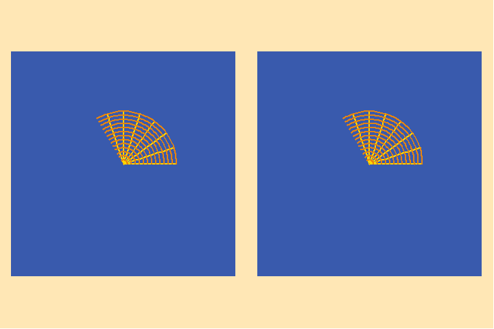
Using Gauss’s representation, each point on the disk can be represented
by a complex number denoted by the length of a line drawn from that point
to the center of the disk, and the angle that line makes with a given direction.
(That direction is marked by the black arrow in the animation.) Under the
complex cubic transformation, each point on the disk on the left is mapped
to a point on the disk on the right by tripling the angle it makes with the
black line, and cubing the length of the line that connects it to the center.
This produces a conformal map of the 1/3 disk on the left to the complete
disk on the right. The conformality of the mapping is expressed by the invariance
of the orthogonality of the arcs and radial lines on both sides. Further,
as Gauss and Riemann emphasized, the conformality of the mapping reflects
the preservation of a harmonic relationship between the minimum and maximum
curvatures as, for example, in the case of a electro-magnetic or gravitational
potential.
This geometrical construction brings to the surface two ambiguities of cubic
functions that only appear when the function is extended to the complex domain.
The first, obvious ambiguity is that since the 1/3 disk on the left maps to
a complete disk on the right, what happens if the function is extended to
the other 2/3 of the disk on the left? In animated figure 2, it is shown that
when this is done, the other two thirds are apparently mapped onto the same
disk as the first 1/3.
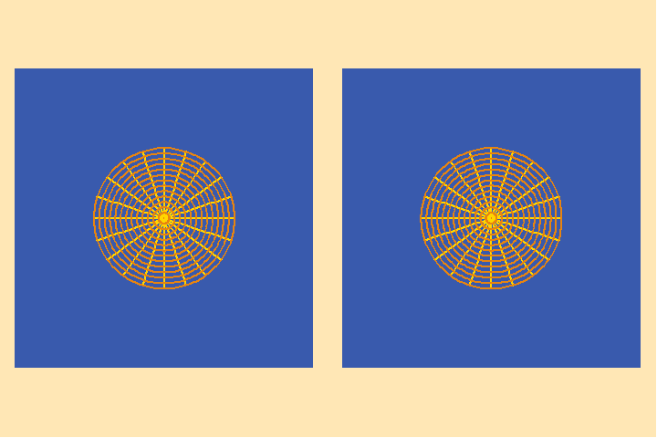
Inversely, every point of the disk on the right maps to three distinctly
different points on the disk on the left.
The other ambiguity that emerges is: what is the effect of the function outside
the boundary of the disk? Under Euler’s knuckle-headed approach of infinite
series, the only way to know is to extend the disk a little bit, and see what
happens, and then extend it some more, and some more ......
These ambiguities, however, are only an effect of the assumptions embedded
in the fantasy-world of Cartesian geometry. To eliminate them, Riemann rejected
Cartesianism and adopted a more advanced form of Pythagorean sphaerics as
it had been pioneered, first by Cusa, and then by Gauss in his use of spherical
mappings of curved surfaces. On the spherical form of Riemann’s surfaces,
what had appeared to be unbounded, is mapped onto a self-bounded sphere. This
removes the false ambiguities inherent in a Cartesian “fish-bowl”
so that the discontinuities that appear on the spherical surface reflect matters
of principle.
An example of this can be seen in the following series of animations. In animated
figure 3, the cubic function illustrated in figures 1 and 2 is mapped, stereographically,
onto the sphere. (Animated figure 4 shows the conformality of this mapping.)
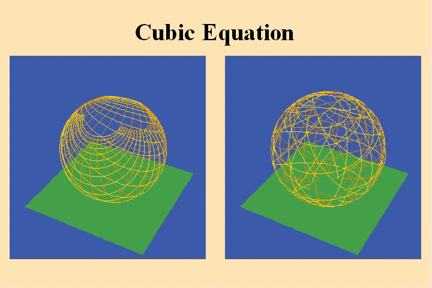
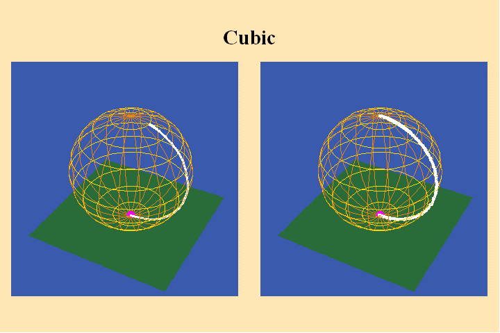
Now what had appeared to be infinitely far way, in the Cartesian form of animations
1 and 2, is mapped to a single point, the north pole, which becomes a second
pivot for the rotation ascribed by the cubic function.
Riemann resolved the indeterminancy of having one point map to three and three
points mapping to one by creating a multi-layered sphere. In this way, those
points that appeared to map onto the same place in the Cartesian form, were
mapped onto different layers (branches) of the Riemann sphere. In our cubic
example, the part of the sphere on the left which is colored red, maps to
the red layer on the right, which covers an entire sphere. Similarly with
the blue and yellow sections. The branches of the sphere on the right are
connected to each other at the poles by what Riemann called branch points
which he said should be thought of as, “helicoids with infinitely small
pitch”.
The boundaries between the branches on the left map to a single curve on the
right which, on both spheres, extends from one branch point to the other.
This curve Riemann called a branch cut across which the layers of the sphere
on the right could be connected to each other, in conformity with their images
on the left.
In this way both spheres become continuous surfaces. But it is important {not}
to think of this construction as two different surfaces. Construct in your
mind as one idea, as Riemann instructed, one single surface comprised of the
essential characteristics of both spheres. Such a surface cannot be visualized
externally, but like all works of art, or true ideas of science, it can be
sensed in the mind as a real object of thought. The visual representation,
as depicted in these animations, must be considered as merely two different
views of the same object, and the mapping to be a continuous transformation
within that object. To facilitate the generation of this idea, use the principle
of inversion, as in a musical composition. The mapping depicted in the animation
is just as much a mapping of the right sphere onto the left as vice versa.
Thus, to understand a complexfunction, one must also think, simultaneously,
of its inverse. The unified action and its inverse are only separated in this
visible form because of the inherent limitations of sense-perception. Nevertheless,
the cognitive powers of the mind enable us to form the required, unified image.
The continuity of these surfaces is illustrated in animated figure 5.
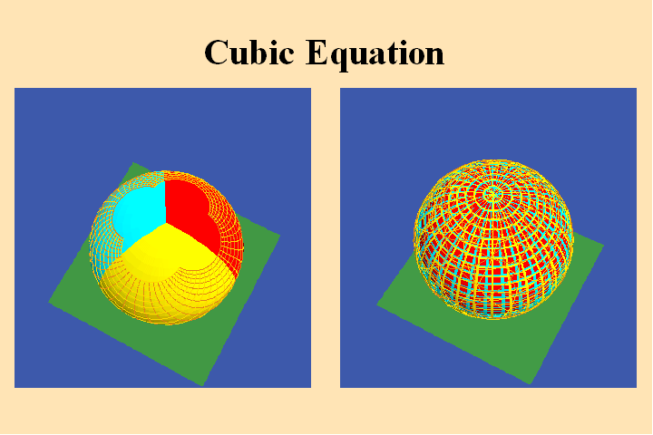
As the black curve traces its pathway on the left sphere, its image follows
a conformal path on the right. When the curve crosses the different partitions
of the left sphere, its image crosses from one branch to another on the right.
Again think of this also, inversely, as the curve on the right being “unwound”
onto the surface on the left.
The different branches of the function appear in the left view as partitions
of a single sphere, while in the right view they appear as different layers
over an entire sphere. Any action in a part of the left sphere, maps to an
action on the same branch of the right. If an action crosses from one branch
to another on the left, its image crosses to the same branches on the right,
and vice versa.
In this way, the Riemann spherical mapping can express a complex function
as an advanced form of the Pythagorean-Keplerian harmonic division of a surface.
On the layered sphere every point will correspond to other points on different
layers that are directly above or below it. These points will each be an image
of distinct point on the sphere on the left. Gauss called such points {congruent,
i.e., harmonic} to each other, relative to the modulus of the function. In
our example of the cubic function, that modulus is 2Pi/3, because a rotation
by that angle will exactly map each branch onto another. Further, as is the
case for all algebraic functions, this modulus has a finite periodicity. In
our example, one rotation of 2Pi/3 will map the red part to the blue and the
blue to the yellow and the yellow to the red. A second rotation will map the
red to the yellow, the blue to the red and the yellow to the blue, and so
on. But, after three such rotations, the process only repeats itself.
Further, the divisions into three branches (for the case of the cubic function)
is independent of the particular position of the branch-cuts. It is the nature
of the cubic function to generate a harmonic division with three branches,
in the same way that the uniqueness of the regular spherical solids is independent
of the positions of the polygons on the spherical surface. The former is a
function only of the harmonic characteristics of the sphere, not of position
on the sphere. This is a characteristic of what Riemann adopted from Leibniz
as “analysis situs”.
Riemann called this characteristic the {modulus of periodicity}, which implicitly
defines a new type of function, which he and Gauss called, {modular functions}.
The characteristics of this modular function are defined by the way the branch
points, singularities and branches fit together harmonically. For Riemann,
this characteristic of analysis situs {defines} the function, not any explicit
algebraic formula.
To illustrate this look at animated figures 6, 7, 8, which show the change
in the Riemann’s surface corresponding to a change in the algebraic
formula from w=z^3 to w=1-z^3.
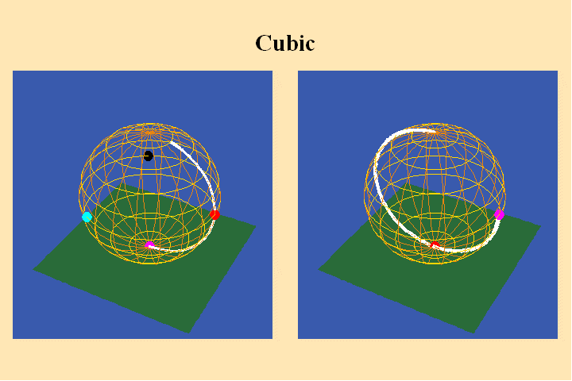
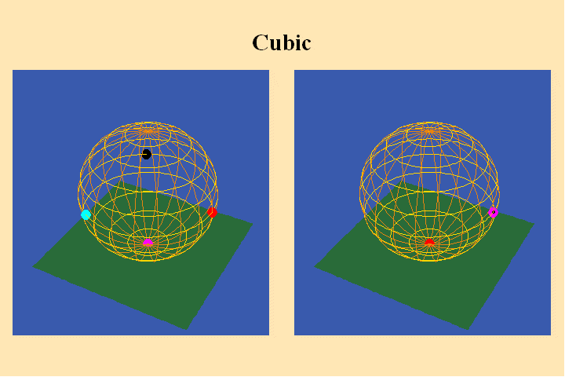
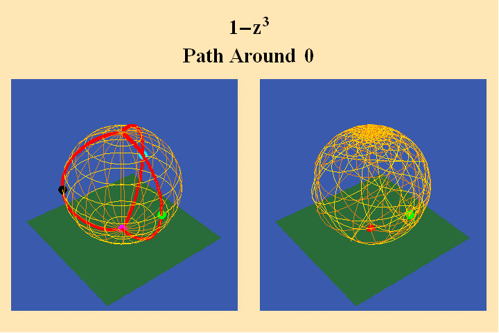
The change in the algebraic formula has the geometric effect of moving the
roots of the function from one point (the south pole in the first case) to
three different points (all located on the equator) in the second case. Though
this change produces a slight variation in the effect on the sphere on the
right, the analysis situs, i.e., the modulus of periodicity, the number of
branch points and branch-cuts, does not change. The harmonic relationships
expressed by the modularity of the function are essentially the same.
Animated figure 9 illustrates the Riemann sphere for a different algebraic
function with an added singularity–a pole.
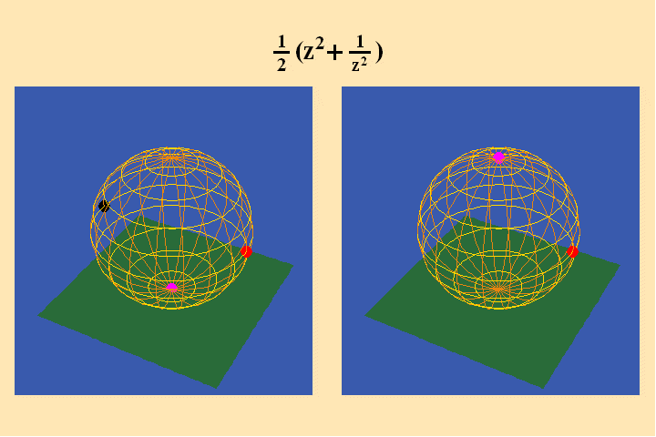
This results in an harmonic division that divides the left sphere into four
quadrants. Each quadrant maps to an entire layer of the sphere on the right.
But as the animation illustrates, because of the presence of the pole, the
two quadrants in the “southern” hemisphere on the left are mapped
from the “north” pole southward, on the right. This effect is
reversed in the mappings of the left sphere’s “northern”
quadrants.
The further effect of the analysis situs can be seen in animated figure 10.
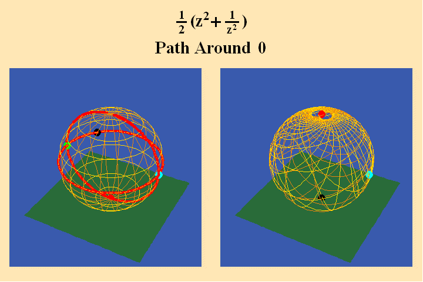
A pathway around the south pole on the left maps to a pathway around the north pole on the right, and, because the pathway on the left crosses two quadrants, its image produces a doubling of the rotation in its image on the right. In animated figure 11, a pathway around a branch point where all four quadrants come together, still produces only a doubling of the rotation on the right.
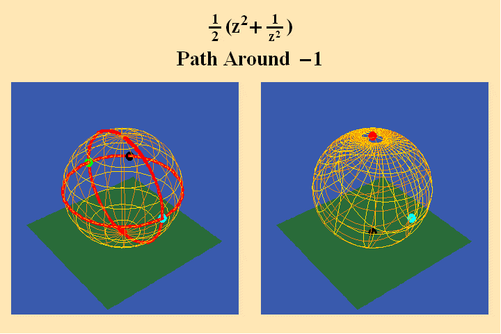
This is because the pathway on the left only spends one-fourth of its rotation
in each quadrant.
This harmonic relationship is associated with a change in the characteristic
of the associated modular function. For the example just illustrated, that
modular function must express two actions.: One that rotates the sphere by
180 degrees and the other that inverts the northern and southern hemispheres.
As in our previous example a finite combination of these actions, along with
the characteristics of the branch points, defines the totality of the action
expressed by the function.
But these are only the Riemann surfaces for algebraic functions. The fun only
really begins with the transcendental functions. In what follows we will be
greatly aided by Riemann’s direction and investigate these functions
from the standpoint of analysis situs freed from the illusions inherent in
an algebraic formula.
The simplest transcendentals, as Cusa and Leibniz demonstrated, are the higher
species from which all the lower algebraic functions are derived. This characteristic
emerges clearly from the standpoint of Riemann’s surfaces as a fundamental
shift in the nature of the associated modular function. As we just illustrated,
the modular function associated with the algebraic species divides the entire
self-bounded surface of the sphere into a finite number of parts, which by
a finite number of rotations, or inversions, can completely describe the harmonic
relationships of the function.
However, the transcendental functions, when expressed by the associated Riemann
surfaces, are characterized by a harmonic relationship that divides the sphere
into an infinite number of parts.
This is a manifestation of Gauss’s assertion that the transcendental
has its true source in the infinite. But as the following examples will illustrate,
that source cannot be depicted by the undifferentiated endless blah of Aristotle’s,
Descartes’ or Euler’s infinite. Rather it must be thought of as
the domain of increasing perfectability which Plato, Cusa and Leibniz ascribed
to the actual universe. As Leibniz put it in his {Discourse on Metaphysics}:
“God has chosen the most perfect world, that is, the one which is at the same time simplest in hypotheses and the richest in phenomena, as might be a line in geometry whose construction is easy and whose properties and effects are extremely remarkable and widespread.”
Thus to understand this domain of the transcendental functions we must proceed
with Riemann’s method, that is we must investigate those functions from
the standpoint of analysis situs, {not} algebraic formulas.
Begin this stage with an investigation of the complex logarithmic-exponential
which is the function that expresses the relationship between the arithmetic
and geometric. As we illustrated in previous installments in this series,
these simple transcendentals are simply-periodic. (See Riemann for Anti-Dummies
Part 62.)
The Riemann surface for such a simply-periodic function is illustrated in
animated figure 12.
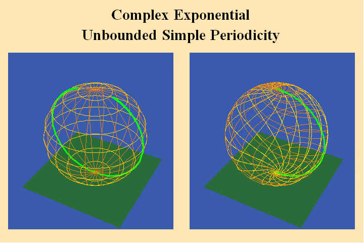
The different colored segments of the left sphere are conformally mapped
to a branch that covers an entire sphere on the right. And as is evident from
the animation, the number of segments of the left sphere is infinite. Thus,
the Riemann surface for the complex exponential divides the left sphere into
an ifinite number of segments and produces a sphere on the right with an infinite
number of layers.
Animated figure 13 shows this same mapping with the sphere on the left projected
down onto a plane.
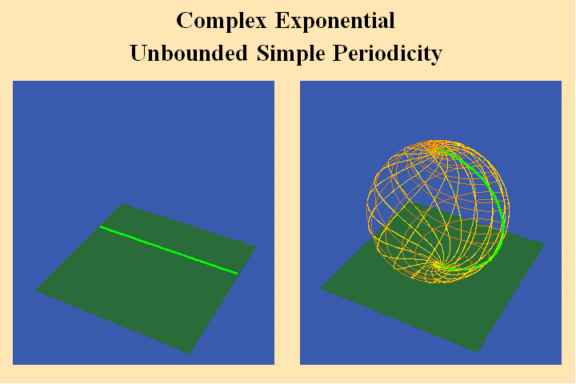
Here one can see each layer of the sphere on the right is mapped onto a strip
on the left. That strip is bounded in the vertical direction, but is infinite
in the horizontal directon.
This harmonic division, generated by the complex exponential, defines an entirely
different type of modular function. The modulus of periodicity is finite (i*2Pi)
but the periodicity of the modulus is infinite!
But the logarithmic-exponential is only the first, and simplest species of
transcendental. As Gauss emphasized, the elliptical transcendentals are an
entirely different species. As we discussed in previous installments of this
series, these transcendental functions arise when two transcendental actions
are acting together to produce a single effect. The simplest examples are
the case of the elliptical orbit, in which the double incommensurability of
the arc with the sine and the arc with the angle combine to produce the unified
non-uniform elliptical motion and the simple circular pendulum. As Riemann
and Gauss emphasized the distinguishing characteristic of elliptical functions
is their double-periodicity. (See Riemann for Anti-Dummies Parts 62 and 63.)
Here again Euler’s fraud is exposed. Both the simple and elliptical
transcendentals can be given an infinite expression in terms of Euler’s
formal construction of the hypergeometric series. But from the standpoint
of the harmonic relationships that emerge with the relevant Riemann’s
surfaces, it can be shown that the “infinite” from which these
two transcendentals arise is not the same.
Animated figure 14 begins to illustrate this.
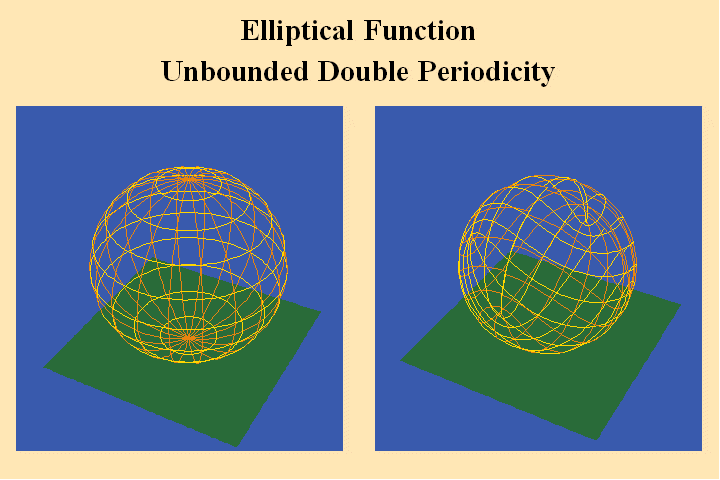
Since the elliptical function is doubly periodic, it appears on the Riemann
surface as a mapping of a doubly bounded parallelogram on the left sphere
to a layer covering the entire right sphere. To show that this mapping is
conformal and harmonic, this animation shows the orthogonal green and white
curves on the left being mapped to a set of orthogonal periodic curves on
the right. In the subsequent animations, only one set of these curves is shown
in order to make the animation more visually intelligible.
Animated figure 15 illustrates that there are an infinite number of parallelograms
on the left sphere, each of which constitutes an entire branch of the function
and thus maps to a layer on the right sphere that covers the entire sphere.
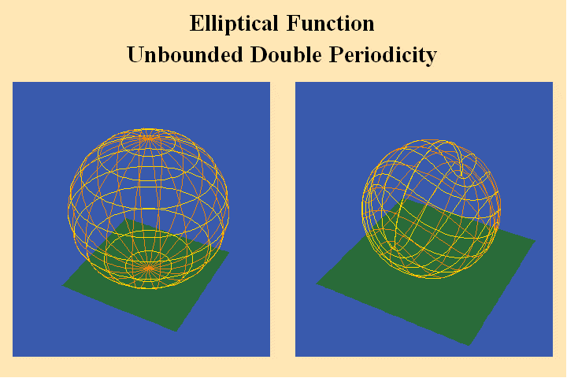
Animated figure 16 shows the same function with the branches of the sphere on the left projected onto a plane.
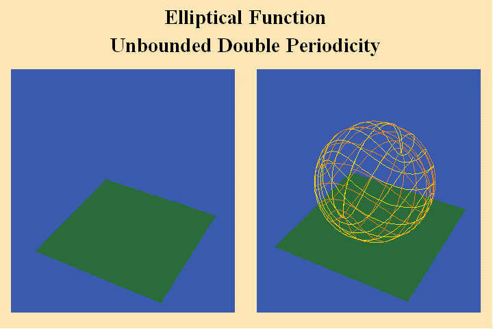
Thus the branches of the elliptical functions are doubly bounded parallelograms,
producing an infinite harmonic division of the sphere. This harmonic division
has a greater density of branches than the infinite strips of the simply periodic
simple transcendentals.
What becomes even more evident from the standpoint of Riemann’s surfaces,
and most relevant for understanding the more universal epistemological implications
of Riemann’s ideas, is that the elliptical modular function expresses
a greater density of singularities than the simple transcendentals.
This increased density of singularities is brought to light when we trace
the pathways of the Riemann surface that go from zero to the infinite. This
is illustrated in animated figure 17.
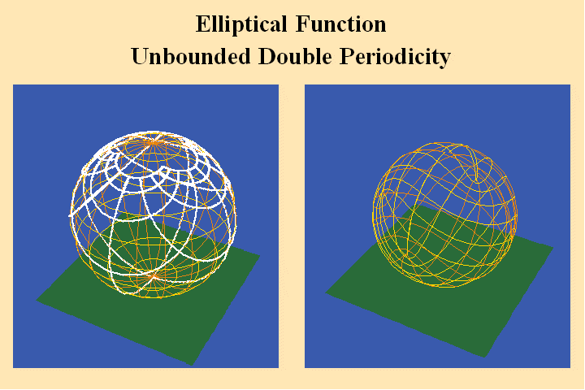
In the figure, the elliptical period parallelograms are outlined in white, and are drawn so that their corners correspond to the points which map to the south pole (zero) on the right sphere. Here we see on the left, orthogonal lines emanating from a corner where the parallelograms meet, and extending to a point near the center of the period parallelogram. The images of these lines, on the right sphere, go from the south pole to the north (from zero to the infinite) and there are four distinct directions. Animated figure 18 shows this same mapping with the left sphere projected onto a plane.
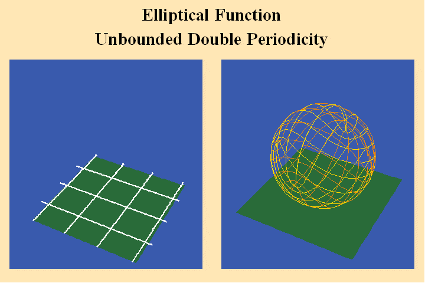
Animated figures 18a and 18b show these paths to the poles with the period
parallelograms drawn so that the center of the parallelogram corresponds to
zero and the corners correspond to the poles.
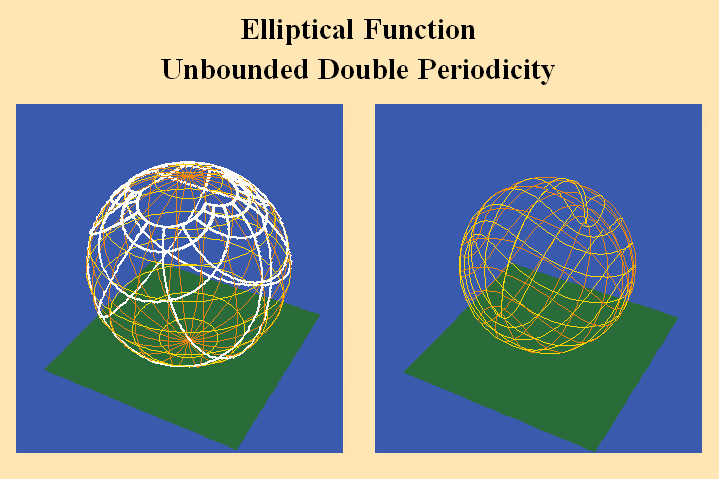
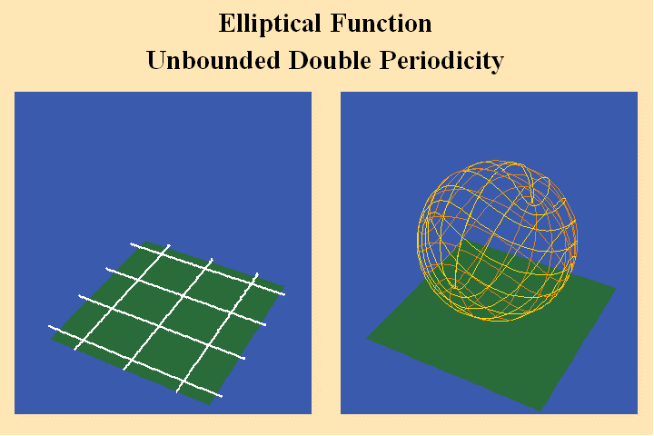
Figure 18c shows a surface representation where each pole has both a positive and negative direction.
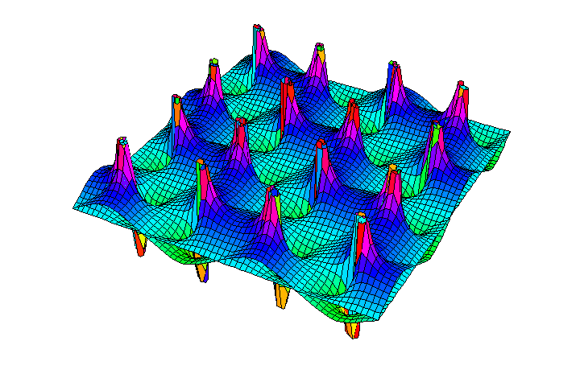
Thus, in the elliptical transcendental, each branch of the function contains
a pole, and since there are four paths to each pole, this pole has double
the effect on the mapping of the simple poles of the sphere. Riemann denoted
this as a pole of the second degree. What is most important to emphasize,
is that the modular function associated with the elliptical transcendentals
has a greater density of singularities than is possible for the simple transcendentals.
Because of this doubly periodic nature of these elliptical functions and the
associated greater power of its poles, Riemann insisted the geometrical structure
of these functions did not conform to the simple spherical action, and could
only be competently mapped onto a torus. Animated figures 19 and 20 show that
the intrinsic geometry of the torus is congruent with this double periodicity
elliptical functions.
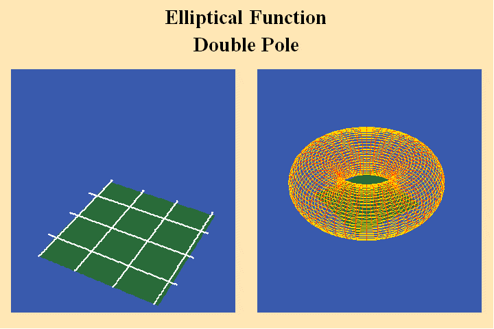
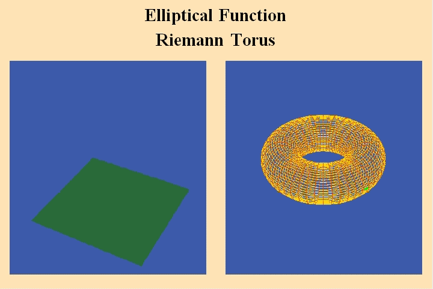
Riemann continued these investigations beyond the elliptical case and into
the domain of the hyper-elliptical or, Abelian functions. When these functions
are expressed by Riemann’s surfaces and their associated modular functions.
It becomes clear that each higher species of transcendental function is characterized
by a harmonic division with a greater density of singularities. We will have
to leave to future installments a further investigation into the anyalsis
situs of these higher transcendentals, but you can already glimpse its nature
from figure 21 which shows a sketch by Gauss of the modular harmonics associated
with the next highest transcendental.
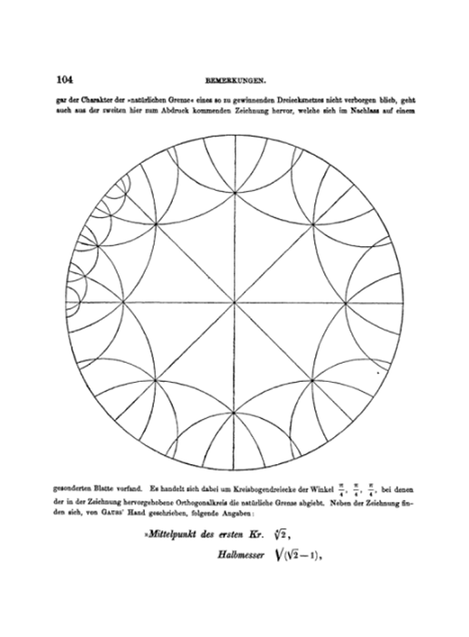
Looking back from the standpoint of the richness of Gauss’s and Riemann’s
ideas, it is a wonder why anyone would allow themselves to be enslaved by
the sophistry of Euler’s infinitely boring calculations.